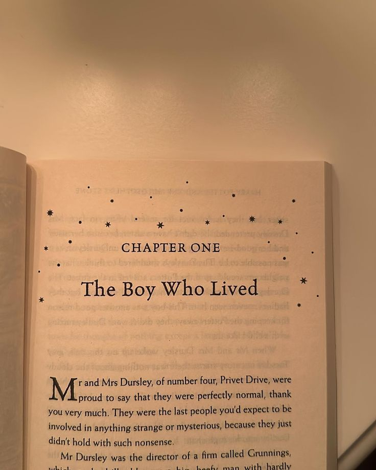
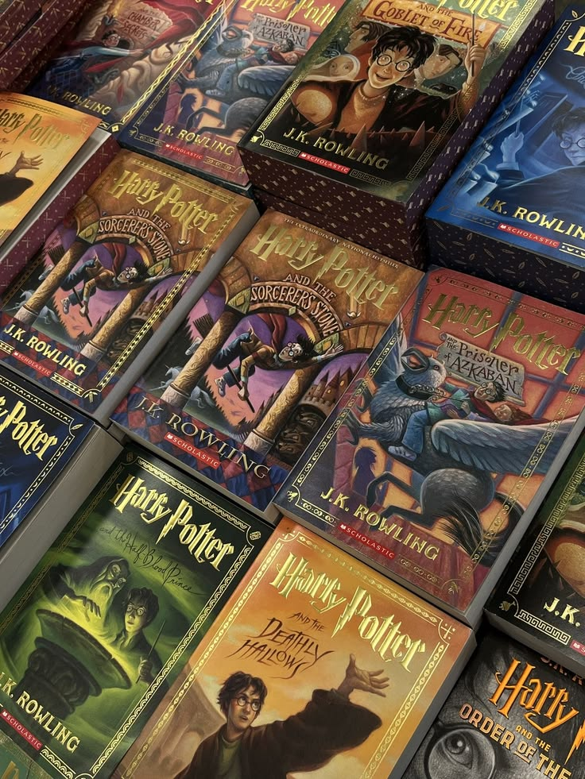

Los libros de Harry Potter

La saga de Harry Potter comenzó como una serie de libros escritos por J.K. Rowling y rápidamente se convirtió en un fenómeno mundial. A través de estas historias, se presenta el mundo mágico, sus reglas y los personajes que forman parte de él.
Cada libro acompaña el crecimiento de Harry y sus amigos dentro de Hogwarts, mostrando no solo aventuras, sino también conflictos más profundos que se desarrollan a lo largo de toda la saga.
Lista de libros
- Harry Potter y la piedra filosofal
- Harry Potter y la cámara secreta
- Harry Potter y el prisionero de Azkaban
- Harry Potter y el cáliz de fuego
- Harry Potter y la Orden del Fénix
- Harry Potter y el misterio del príncipe
- Harry Potter y las reliquias de la muerte

Sobre la historia
A medida que avanzan los libros, la historia se vuelve más oscura y compleja. Los personajes enfrentan decisiones difíciles y el conflicto con Voldemort se vuelve cada vez más importante.
Esta evolución es una de las razones por las que la saga logró conectar con lectores de distintas edades, manteniendo el interés a lo largo del tiempo.